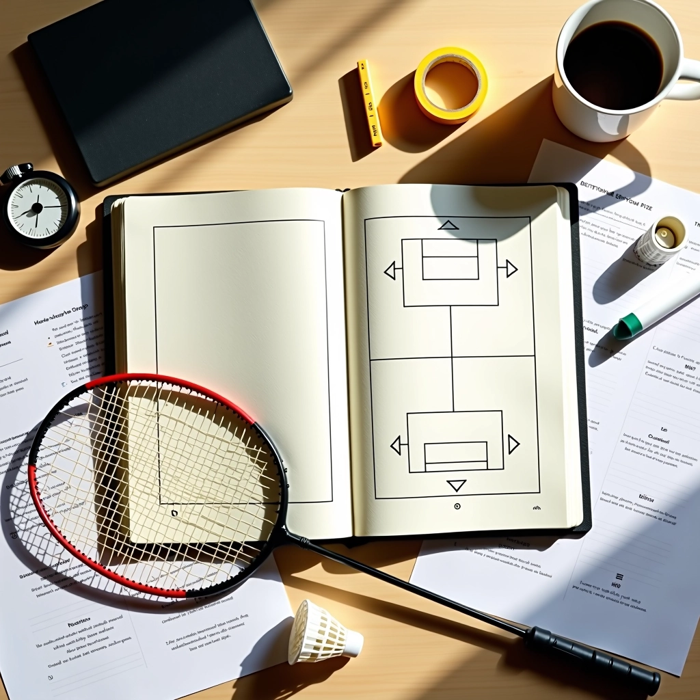
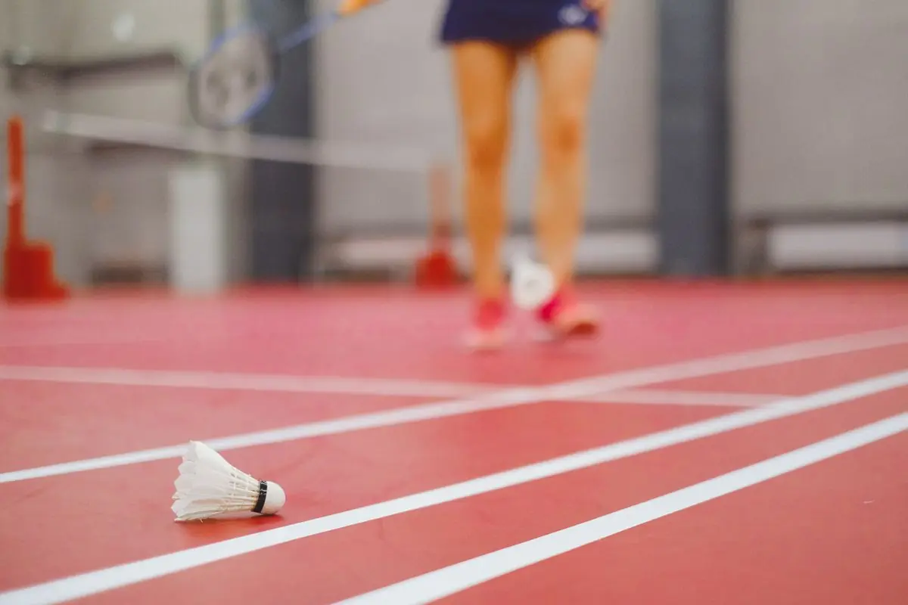

الدفاع الخلفي والتعافي السريع
استراتيجيات الدفاع من الخط الخلفي والتحركات السريعة للعودة إلى موقعك بعد كل ضربة دفاعية. تعلم كيفية الحفاظ على التوازن والاستعداد للهجوم المرتد.


بقلم
فريق الشاهين الذهبي للمحتوى التحريري
فريق التحرير والمراجعة
كتبه فريق الشاهين الذهبي التحريري، متخصص في تقديم إرشادات عملية وموثوقة حول تكتيكات الدوران في الزوجي المختلط بالريشة الطائرة.
فهم أساسيات الدفاع الخلفي
الخط الخلفي هو آخر خط دفاع لديك. هنا، تحتاج إلى أن تكون جاهزاً لاستقبال الضربات القوية والعالية التي يرسلها خصمك. الشيء المهم هو عدم الانتظار حتى تصل الريشة إليك — يجب أن تتحرك للأمام قليلاً وتأخذ موقعاً استباقياً.
الموقف الصحيح ضروري جداً. ركبتاك منحنيتان قليلاً، وزنك موزع على كلا القدمين بالتساوي. تخيل أنك تقف على نقطة محورية — جاهز للانطلاق في أي اتجاه. ذراعاك أمامك قليلاً، والمضرب في منتصف الجسم تقريباً.
من المهم أن تتذكر أن الدفاع ليس مجرد استقبال الكرة. إنه عن الاستعداد للهجوم المرتد. كل ضربة دفاعية جيدة تفتح الباب أمام فرصة هجومية.

نصيحة مهمة
تحرك نحو الأمام قبل أن يضرب خصمك الريشة. هذا يعطيك المزيد من الوقت للرد والتحكم بالكرة. معظم اللاعبين المبتدئين ينتظرون — وهذا خطأ. الحركة الاستباقية توفر لك 0.3 ثانية إضافية على الأقل.
التعافي السريع والعودة للموقع
بعد ضربتك الدفاعية، لا تقف في مكانك. يجب أن تعود فوراً إلى موقعك الأساسي. هذا يُسمى "التعافي السريع" أو Quick Recovery. معظم الفريق الفائز في الزوجي المختلط يركضون 2-3 خطوات سريعة للخلف بعد كل دفاع.
الحركة يجب أن تكون صغيرة وسريعة. استخدم خطوات جانبية بدلاً من الركض للخلف مباشرة — هذا يحافظ على توازنك. في خلال ثانية واحدة، يجب أن تكون جاهزاً لاستقبال الضربة التالية.

خطوات التعافي السريع
اتبع هذا التسلسل بعد كل ضربة دفاعية
انقل وزنك
انقل وزنك من الساق الخلفية إلى الأمامية فوراً بعد الضربة. هذا يجعل حركتك للخلف أسرع.
اركض بسرعة
خذ 2-3 خطوات جانبية سريعة نحو موقعك الأساسي. لا تركض مباشرة للخلف — استخدم الخطوات الجانبية.
توقف بسيطرة
توقف بشكل متحكم به، مع إبقاء ركبتيك منحنيتين قليلاً. لا تتوقف بقسوة — هذا يفقدك التوازن.
كن جاهزاً
عد إلى وضعية الاستعداد الدفاعي مع رفع مضربك. أنت الآن جاهز للضربة التالية في أقل من ثانية.
تنبيه مهم
هذا المحتوى مقدم لأغراض تعليمية حول تقنيات الريشة الطائرة. النتائج تختلف بناءً على مستوى لياقتك البدنية والخبرة الفعلية. تدرب بانتظام مع مدرب مؤهل لتحسين أدائك بشكل آمن وفعال.
التنسيق بين الزوجين
في الزوجي المختلط، أنت لا تلعب وحدك. يجب أن تتواصل مع شريكك. إذا كنت تدافع من الخط الخلفي، يجب أن يكون شريكك في الأمام مستعداً. عندما تعود للخلف، هو يغطي المنطقة الأمامية. هذا التنسيق هو ما يفصل بين الفريق الجيد والفريق المتوسط.
نداء بسيط مثل "ركضت" أو "أنا هنا" يساعد شريكك على معرفة موقعك. هذا يقلل الالتباس والفراغات غير المحمية. في المباريات المهمة، تجد أن الفريق الفائز يتكلم باستمرار.

5 نصائح للدفاع الخلفي الفعّال
مراقب الخصم
راقب حركات خصمك. اذا كان يستعد لضربة عالية، تحرك للخلف قليلاً. اذا كان يلعب دفاع، كن جاهزاً للهجوم.
الخطوات الصغيرة
لا تأخذ خطوات كبيرة. خطوات صغيرة وسريعة توفر لك التوازن والسيطرة. هذا يسمح بتصحيح سريع للموقع.
الضربة الهادئة
لا تضرب الكرة بقوة. الدفاع يتطلب تحكماً دقيقاً. ضربة دفاعية جيدة تسقط الكرة قريبة من الشبكة.
الاستعداد النفسي
كن مستعداً نفسياً لاستقبال أي ضربة. الثقة في نفسك تجعلك أسرع في الحركة والرد.
التدريب المستمر
التعافي السريع يتطلب ممارسة منتظمة. مرتين إلى ثلاث مرات أسبوعياً كافية لتحسين ملحوظ.
القراءة المتقدمة
كلما لعبت أكثر، كلما تحسنت قدرتك على توقع الضربات. هذا يعطيك وقتاً أكثر للتحرك والرد.
الخلاصة
الدفاع الخلفي والتعافي السريع هما جزء أساسي من لعبة الزوجي المختلط الناجحة. إنه ليس مجرد عن استقبال الكرة — إنه عن التحضير للهجوم المرتد والحفاظ على التنسيق مع شريكك. مع الممارسة المنتظمة والانتباه لتفاصيل الحركة، ستجد نفسك تتحسن بسرعة.
ابدأ ببطء. اركز على الموقف الصحيح والحركات الأساسية. بعد بضعة أسابيع، ستصبح هذه الحركات طبيعية وتلقائية. عندها، يمكنك التركيز على التقنيات الأكثر تقدماً والتنسيق مع شريكك. لا تستعجل — كل لاعب محترف بدأ من حيث بدأت أنت.
مقالات ذات صلة
اقرأ المزيد عن تكتيكات الزوجي المختلط